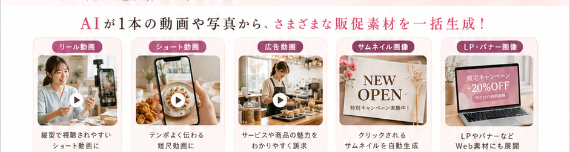
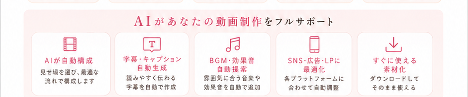
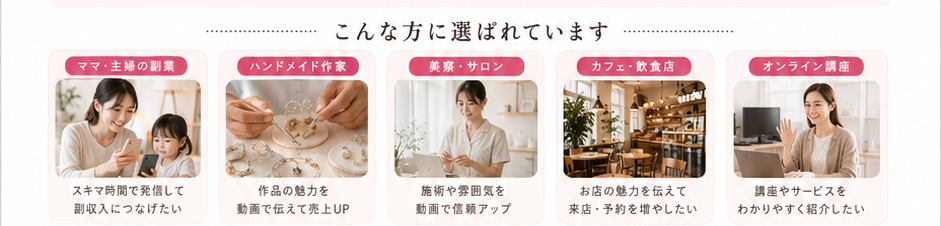
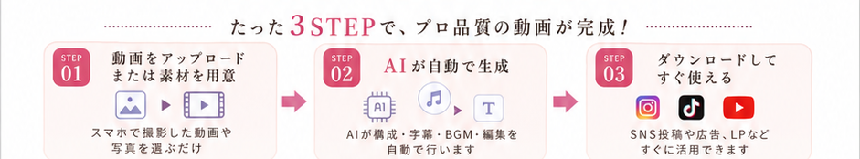
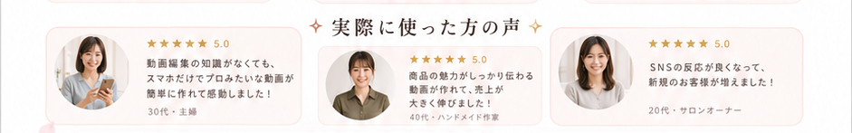
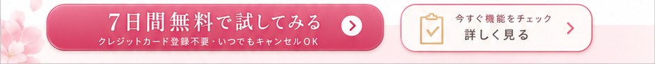

画像1枚から、リール・広告・LP用動画へ。
7日間無料で試してみる


スマホで完結
動画が苦手でも、
販促素材を作りやすく。
構成・字幕・見せ方をAIに任せて、SNSやLPに使える動画素材へ。
詳しく見る


START GUIDE
スマホだけでAI動画を
販促素材に変える方法
noteの商品ページへ誘導するためのボタンです。公開時にリンクを差し替えて使えます。
7日間無料で試してみる ※リンク先はご自身のnoteまたはGumroadの商品URLに差し替えてください。